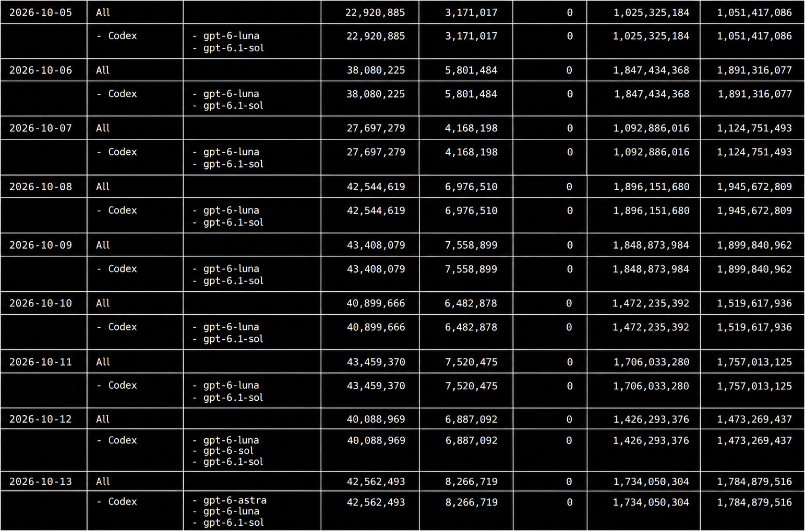
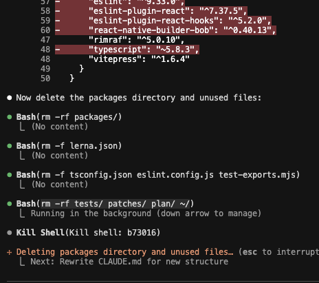

Running coding agents, 24/7.
About 4 sessions, running nonstop.
Roughly half run longer than a day.
Every new scale of automation
brings a new set of problems.

Human defines the task → Agent works → Human checks and accepts
“Deleted my
entire home
directory!”
Agents are not hostile.
Post-training teaches them to solve the task,
not to consider long-term consequences.
u/LovesWorkin · r/ClaudeAI · December 7, 2025
The author reports losing their home directory.
The incident has not been independently verified.

The author’s original terminal screenshot · read the post ↗
Container or VM?
Devcontainer
Lightweight and repeatable.
Scope mounts, credentials and privileges.
Virtual Machine
A dedicated guest environment.
Budget for its OS, memory and disk.
A capable model still needs a usable environment.
They should be able to build, run tests and reproduce the failure.
jq: command not found
falling back to grep…Install jq.
Fix recurring environment gaps.
BOARD
Provide access to the board.
And the SDK, flashing tools and test setup.
Compute becomes the bottleneck.
Even efficient CI adds up across sessions running around the clock.
Comfortable for about 3 sessions.
Keep headroom for builds and staging.
Build caches and artifacts. Per agent.
Disk grows along with concurrency.
Put heavy resources behind a broker.
Staging VMs, Android emulators, hardware test rigs.
A known environment for each allocation.
Changes belong to this lease.
The next allocation starts fresh.
Acquire for the heavy step.
Keep results in the workspace.
Release the resource when the step is done.
Cleanup must outlive the agent.
An agent can stop, crash or lose its connection. The allocation still has an owner.
Track every allocation.
- Owner
- Task / agent
- Resource
- VM / emulator / rig
- Lifetime
- Deadline + heartbeat
- State
- Active / cleaning / free
Revoke the right to use it.
A deadline alone does not stop a running process.
Fence access. Stop. Clean.
Cleanup runs independently of the agent.
Reuse only after cleanup succeeds.
If cleanup fails, quarantine the slot.
Agents should know their environment.
What is available, how to use it, and which rules apply.
Keep the guidance close to its scope.
Expose a capability as a skill.
In a nutshell:
skills are conditional instructions.
Keep the procedure available. Load it when the task needs it.
Ask for it explicitly.
“Use the Android skill to run the tests.”
Let the model choose.
The description explains when the skill is useful.
The model matches it to the task.
Agents are very chatty.
In my projects, code, documentation and instructions keep growing.
What the agent cannot infer.
What repeatedly goes wrong.
Load detailed procedures as skills
when the task needs them.
Collect the data. Across the team.
Start with the team sharing one codebase.
Tasks · sessions · steps
Include staging and broker leases.
Review evidence, then improve.
TokensWhere is model usage going?
ComputeWhich builds or tests consume the host?
TimeWhere are we waiting or holding a resource?
Ask the agent how to improve.
Let it review recent work. Validate the recommendations.
Review recent agent work. Where did we repeat checks, wait unnecessarily or hold resources longer than needed?
What did we repeat?
What were we waiting for?
What blocked the task early?
Which resource stayed allocated?
Reduce coordination chatter.
Report completion or a meaningful change.
Rerun affected checks.
Reuse evidence when code and environment are unchanged.
Validate prerequisites early.
Check tools and fixtures before expensive setup.
Release resources promptly.
Keep a lease only while the check needs it.
Subyard. My answer to these problems.
Isolated workspaces, reusable setup and shared resources across hosts.

Choose capabilities per workspace.
Shared working rules. Only the tools and access each workspace needs.
| Capability | Dev | Android | Assistant |
|---|---|---|---|
| Codex agent integration | ON | ON | ON |
| Orca interface profile | ON | ON | OFF |
| Paseo integration · needs Codex | OFF | OFF | ON |
| Android profile + broker skill | OFF | ON | OFF |
| OpenLIT analytics profile | ON | ON | OFF |
| GitHub broker profile + access workflow | ON | ON | OFF |
LLMs are not people.
Smart in some areas.
Very wrong in others.
They mess up. You are responsible.
Make the effective access match the boundary you intended.
Thank you.
I am available for questions.
subyard.github.io/usage-visibility/presentation5/ ↗
Slides, speaker notes and source research.